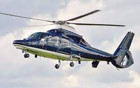

Aerospatiale Dauphin SA356N

The service's first helicopter was an Aérospatiale SA 365N Dauphin.
Built in 1982, it was registered G-HEMS, and delivered in December
1988, in time for the launch of the service in 1989. It initially wore
a white livery, but was repainted several times, eventually into a red
livery following sponsorship by Virgin. It was retired from service in
2000.
MD 902 Explorer

Two MD Helicopters MD 902 Explorers are currently in service,
registrations G-EHMS and G-LNDN. Both wear the same red-based livery,
with green and yellow flashes, and are identical in model, equipment
and crew. Only one helicopter is operational per day – the other acts
as a spare in case of break down, maintenance or, in a major incident,
both helicopters are able to deploy. The helicopters usually cruise at
120 knots (220 km/h; 140 mph), at an altitude of anywhere between 500
and 1,000 feet (150 and 300 m). A regular fuel load, around 400 kg
(880 lb), allows for one hour's flying time.
G-EHMS Rowan

G-EHMS was built in 2000 and entered service in October of the same
year, replacing the earlier SA 365N Dauphin 2. From 6 March 2012, the
helicopter became the UK's first air ambulance to carry emergency
blood supplies, allowing transfusions to be administered at the scene
of an accident rather than later in hospital. A specialised
refrigerator installed in the helicopter allows the transport of four
units of the universal O-negative blood type which can be stored in
the aircraft for up to 72 hours (unused stocks can be returned to the
hospital).